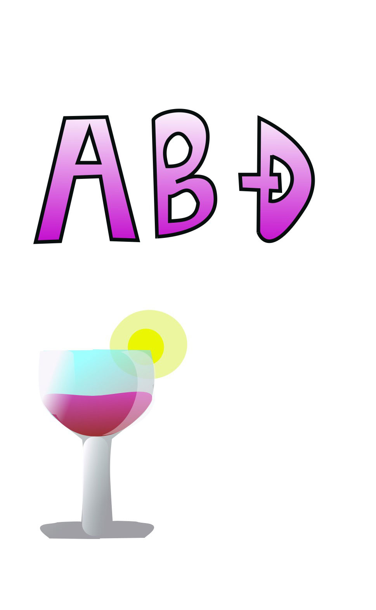
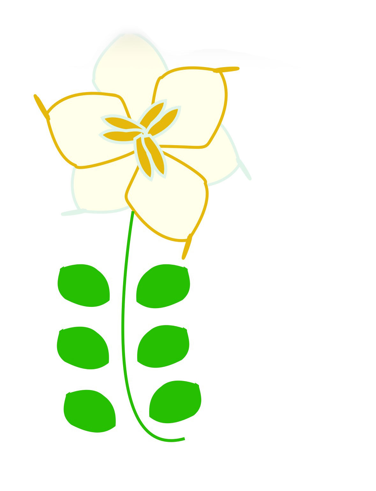
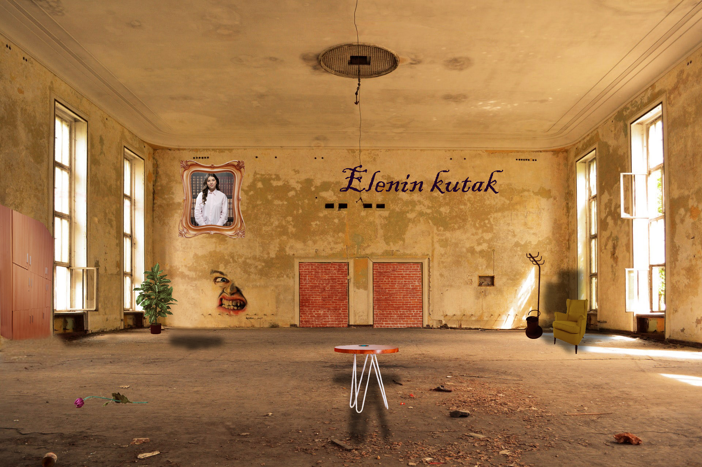

HOMEPAGE
O MENI
VIDEO
Moje vježbe
Vektorska grafika; Učenje osnova izrade fontova i osnove vektorske grafike


Pixel grafika; Moj projektni zadatak

Video/web; Izrada kinemagrafa u video montažnim programima